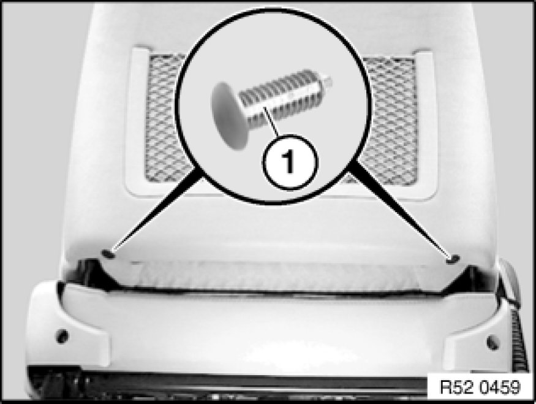
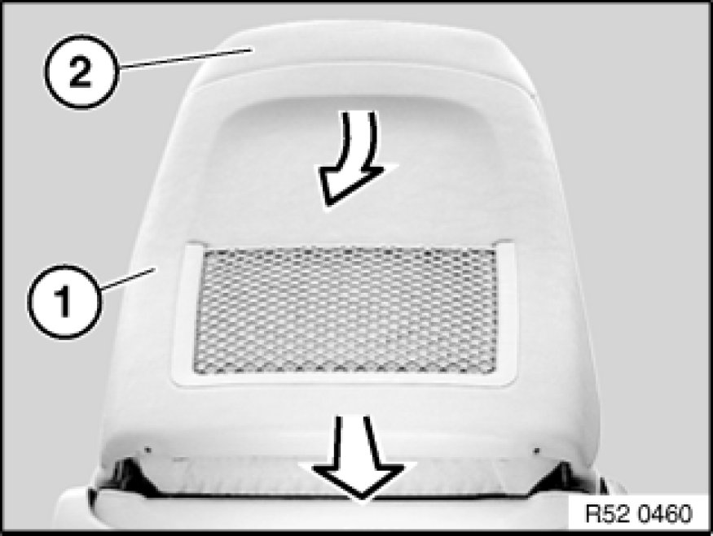
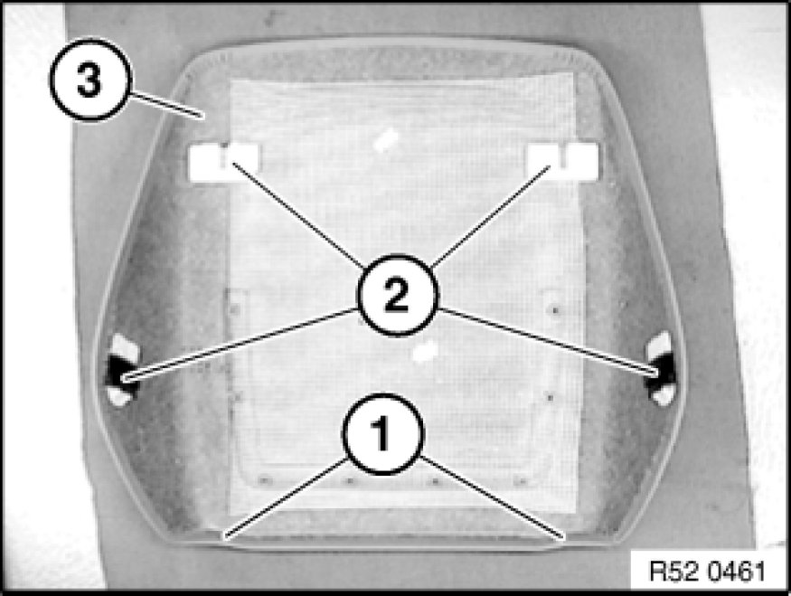
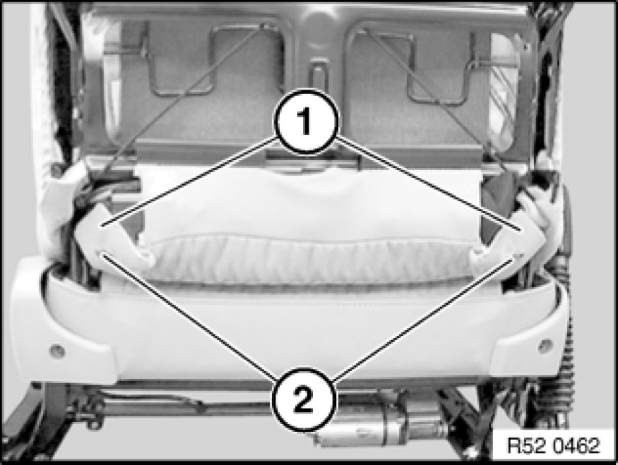
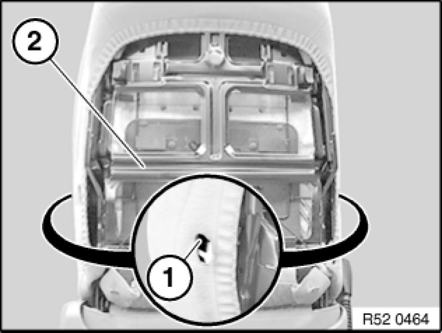

Removing and Installing/Replacing Rear Panel on Front Left or Right Seat Backrest (Sports/Manual)
52 15 198 - Removing and installing/replacing rear panel on front left or right seat backrest (sports/manual)

Lever out clips (1).
Installation:
Replace faulty clips.

Lever out rear panel (1) at bottom towards rear.
Pull rear panel (1) downwards off backrest frame (2).

Installation:
Bores (1) and fastening set (2) on rear panel (3) must not be damaged.

Installation:
Slide backrest cover (1) on left/right over clip mount (2).

Installation:
Mounts (1) on backrest frame (2) must not be damaged.
To install rear panel, first slide into mounts (1) and then slide in at sides at bottom.

Installation:
Feed rear panel at sides into opening in backrest cover.
Insert rear panel into mounts (1) on left/right of backrest frame (2) and snap into place.